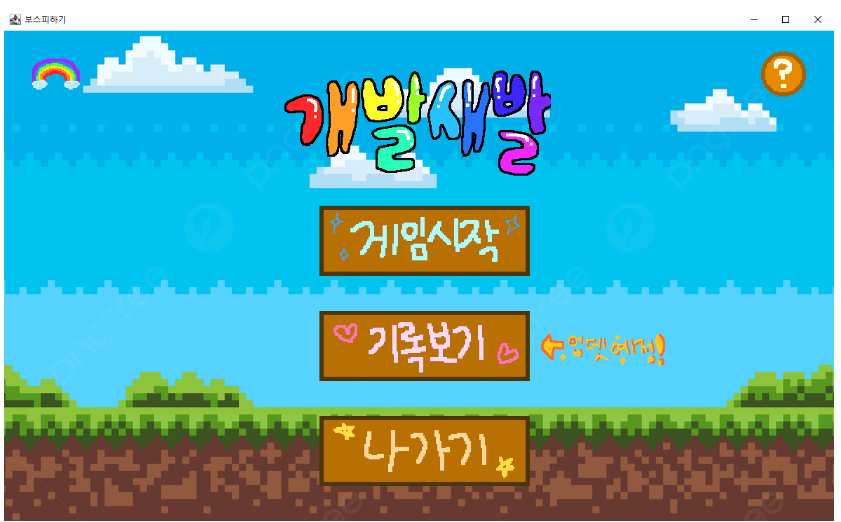
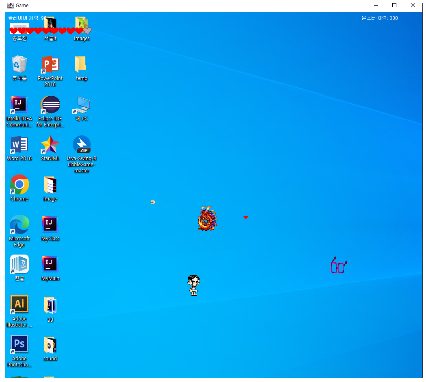
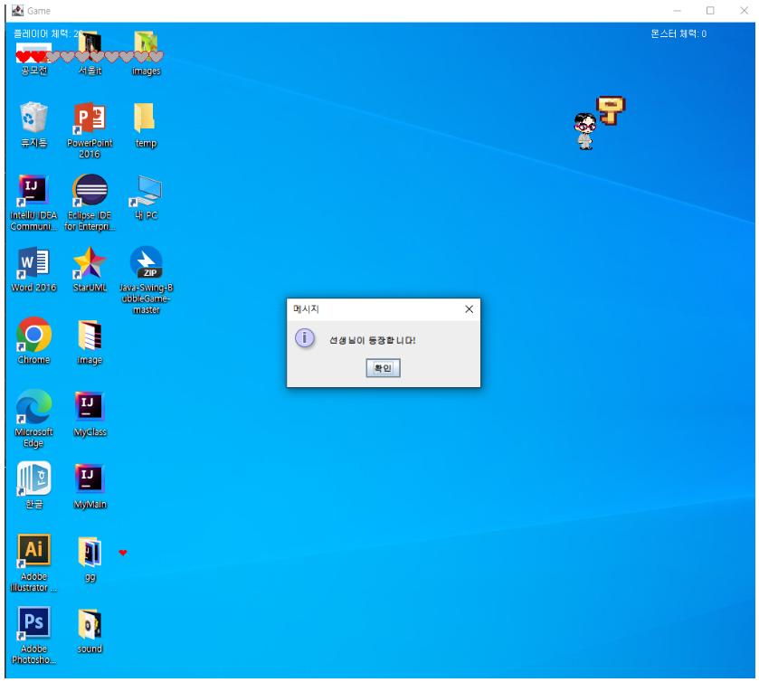
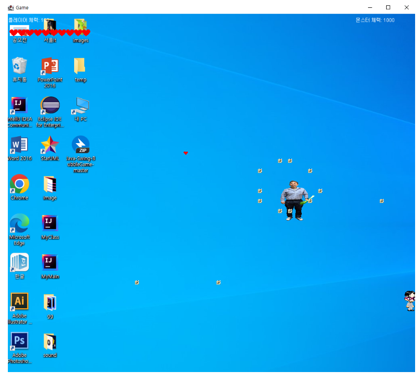

G.G_PROJECT
Tech Stack : Java Swing Git-Github IntelliJ IDEA

게이머들간의 약어인 GoodGame의 줄임말 GG를 팀명으로 정하고 개발을 한다는 뜻과 개발새발 제작했다는 뜻의 중의적 표현으로 게임명을 개발새발로 정했습니다.
본 프로젝트에서 저는 플레이어의 이동, 공격방식, 몬스터의 공격, item, 충돌감지를 담당했습니다.

플레이어 생성, item(랜덤좌표에 생성), 몬스터 생성

몬스터 처치, 안경(갑옷) 아이템과 플레이어의 충돌 감지 후 플레이어의 외형 변경, key item 생성, 다음 스테이지로 이동

몬스터 변경(몬스터의 체력에 따라공격 방식 세분화)